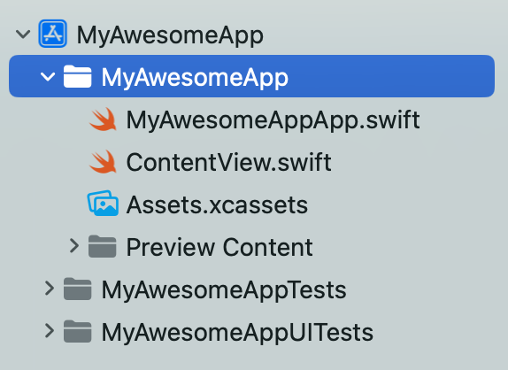
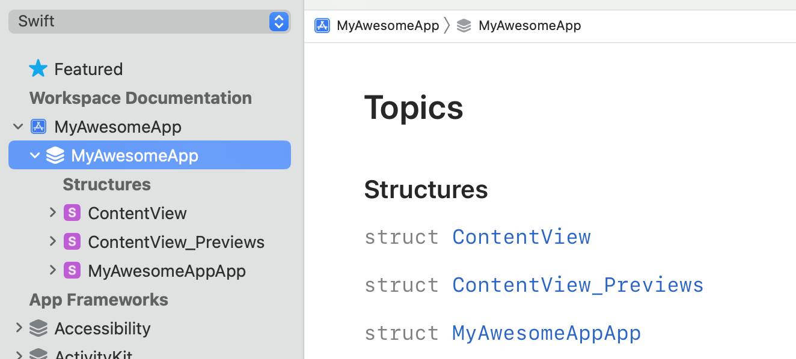
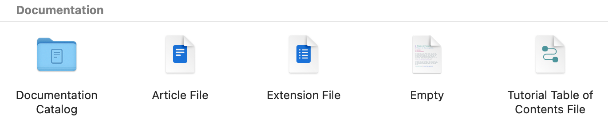
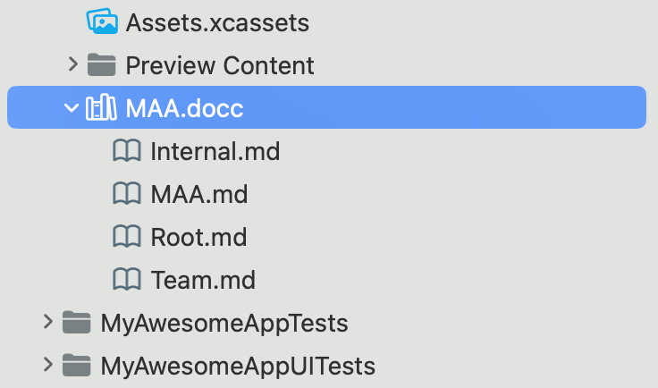
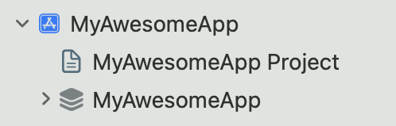
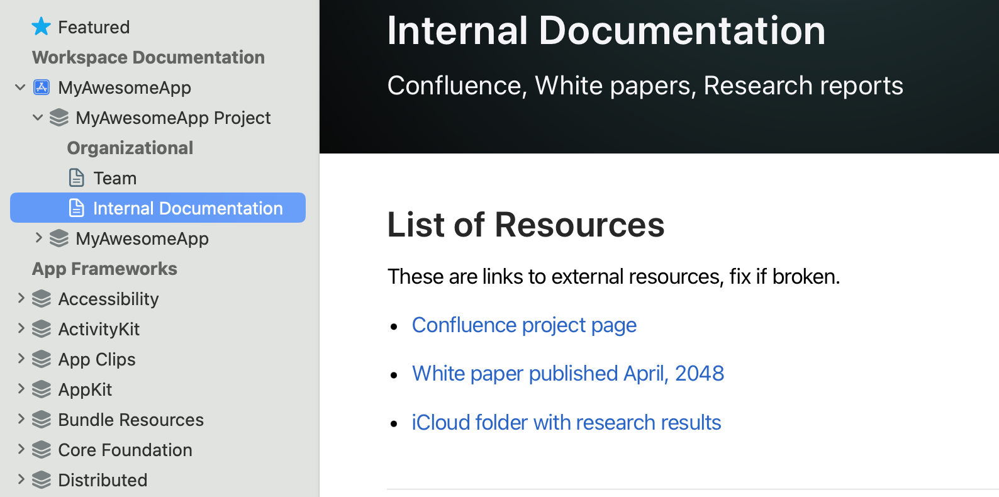
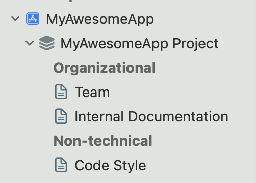
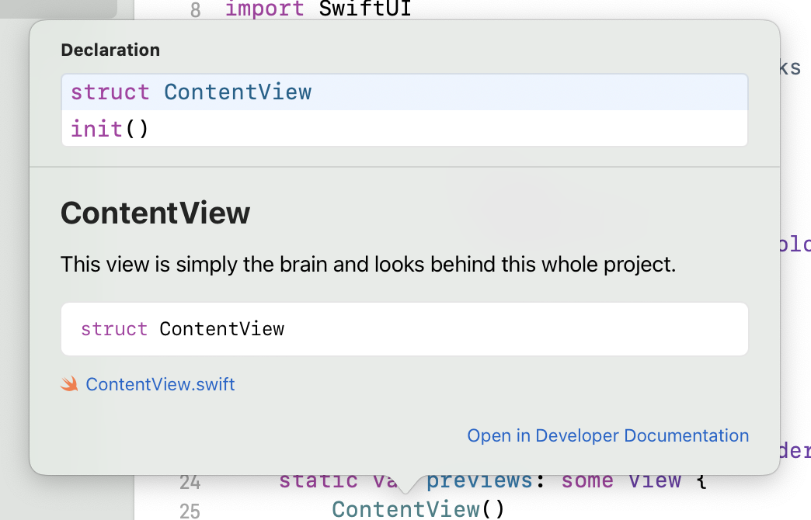
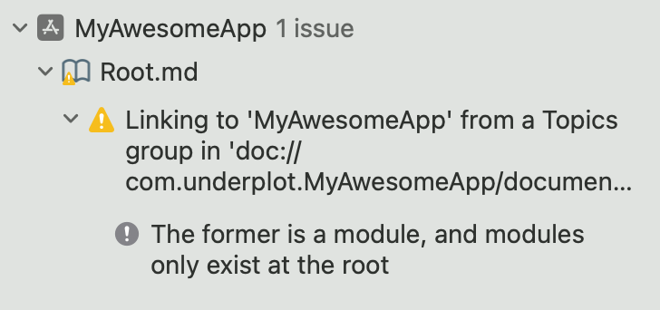

DocC: Project documentation structure

This post is about structuring the documentation for a project with Swift DocC. (Apple’s intro to Swift DocC)
Swift DocC in Xcode automatically builds project documentation following the structure of the app’s code hierarchy. Additionally, DocC allows you to create custom curation and hierarchy to improve the discoverability and the user experience of said documentation.
Bellow I’ll suggest a simple documentation hierarchy for apps or packages, especially in the context of a larger team or organization.
Note: The code in this article produces a warning when compiled. There is an open issue at the DocC repo here — chime in the comments there if you want to contribute to the conversation.
Documentation Basics
Let’s create a new SwiftUI app in Xcode:
Choose Build Documentation from Xcode’s menu to see the project’s documentation in Xcode’s Documentation Viewer window (I have Cmd+Shift+B set up for that, really handy):
You can see that, by default, Xcode has already done plenty:
- Added the project in the Documentation Navigator pane. Created a Documentation Root and curated under it a module called MyAwesomeApp (designated by the 3 squircle pancakes icon).
- Curated all the project’s available programming types under that root node —
ContentView,ContentView_PreviewsandMyAwesomeAppApp.
This is quite neat when developing a Swift package for example — DocC curates all public types automatically under the root. Or in other words, types that you want to expose to external consumers and want to definitely document.
In an iOS app all your internal or public types are automatically curated under the root. Many of your internal types could be undocumentable, unimportant and simply can add way too much noise to your documentation landing page so that automatic curation might become a nuisance.
Documentation vs. Reference
Last but not least, while a Swift package often wouldn’t need a broader context in its documentation, an app or a larger project might include plenty of non-technical documentation.
A good example of the kind of non-technical documentation that a project could include is the Swift repo. Let’s have a look at some of the files found in the repo:
- In the benchmark folder there’s a document about a naming convention that needs to be followed: Naming.md
- A guide how to set up LSP + Emacs: SettingUpLSPEmacs.md
- Conceptual/design document on generic signatures: GenericSignature.md
- and so on.
Since Swift doesn’t have DocC documentation, these are just files laying around that you discover by chance.
Next, let’s see how to create a documentation structure that is more useful than just documenting the code.
DocC catalogue
Choose New File… from Xcode’s menu and scroll down in the file template picker until you reach the Documentation section:
Pick Documentation Catalogue — that creates a new project folder with a .docc extension in your project. Inside you can add resources or free-form text articles in markdown — below I already added few files that I’m gonna use:
Let’s start with defining a new Documentation Root (in other words a new landing page for the documentation besides MyAwesomeApp module).
My additional documentation root is the file Root.md and contains:
# MyAwesomeApp Project
Code reference and useful project details
@Metadata {
@TechnologyRoot
}
## Overview
Text...
It’s a plain markdown file, containing an extra directive to tell Swift DocC that the file is a documentation root page (@TechnologyRoot). This adds a new node directly under the project in the Documentation Navigator:
You can already see how we could split code reference from conceptual documentation pretty neatly in the Documentation Viewer by having two or more root pages.
However, I have a couple of small nitpicks:
- I’d like for the documentation to have one entry point so people can navigate the docs in a guided manner.
- Decoupling the documentation into multiple roots only allows you to export the compiled documentation of one of them at a time:
Let’s see what could a nice documentation structure be.
Documentation structure
Organizational
Let’s add an “Organizational” section to the root page — you know, things you need when you first clone the project. Here’s an example task group I’m adding to Root.md:
## Topics
### Organizational
- <doc:Team>
- <doc:Internal>
The new Organizational section features two links — Team.md contains the primary points of contact for the project:
# Team
Viable points of contact
## Team Members
The current important points of contact for this project are:
- [Lead Designer 👩🏽🎨 Anna B.](https://underplot.com)
- [Project Manager 💼 Sonya A. G.](https://underplot.com)
- [QA 💥 Peter M.](https://underplot.com)
- [Team Therapist 🎋 Maria v. M.](https://underplot.com)
And a second file called Internal.md with links to Confluence, GitHub, automation scripts, and further internal resources.
As any documentation this information is also fragile and could become outdated. But for an open source project, I’d argue that is much better to bundle all this kind of data alongside the code even if it sometimes would be out of sync.
Now the new root is a neat starting point for new or old users to get things done and figure out who to contact and where to find resources. Here’s the Internal Documentation page which contains links to resources providing more context about the project:
Note: You can render these as a table, list or other by using the new @Links directive.
Non-technical
Next, I’ll add a section for style guides, conceptual guidelines around concurrent code, all the UIKit vs. SwiftUI team holy-war artifacts, etc:
### Non-technical
- <doc:CodeStyle>
Here’s where developers should come when they have a doubt about an architectural decision or need context why something is implemented one way or another. Naturally, as there are more pages to curate here you’d group them to keep the root easy to navigate.
Code Reference
Last but not least, you definitely do need the code reference in here too. Creating a meaningful documentation hierarchy that helps exploring the APIs instead of just following the code hierarchy is a real challenge.
You’d probably ask “Why curate the code reference in the last section? Wouldn’t the user need to read API docs much more often than doing any of these other tasks?”
No.
How often do you start from the main page of CoreData or UIKit and you navigate to the property you want to use? Users most often read contextual docs in the editor by clicking a symbol or search in the Documentation Viewer:
Once the user is on a given documentation page your curation will help them to navigate related topics but they would rarely start from the module root and find what they need.
So let’s curate the app itself plus some important, highly-visible types in the last section of the root page:
### Code Reference
- ``MyAwesomeApp``
- ``MyAwesomeApp/AppManager``
That allows developers to drill down into code reference docs from the root by clicking on MyAwesomeApp or quickly see AppManager’s docs.
Now the Documentation Navigator shows the code docs hierarchy as the last section in the MyAwesomeApp Project root node. Notice that manually curating the app module also removes it as a root node and we have only one entry point!
The complete documentation is now easy to navigate, export, and distribute. The only annoyance is that you get a build warning:
Again, If you have a minute to comment on the DocC repo issue that’d be helpful.
Now that you have both technical and conceptual documentation in a single bundle you should add a documentation build phase in your CI and make the built documentation available inside your org.
For Swift packages, the Swift Package Index will automatically build your documentation — make sure to add your package there!
Any thoughts on designing great project documentation? What other sections might be useful?
Get in touch at https://mastodon.social/@icanzilb.